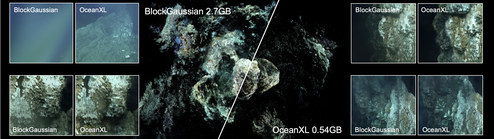
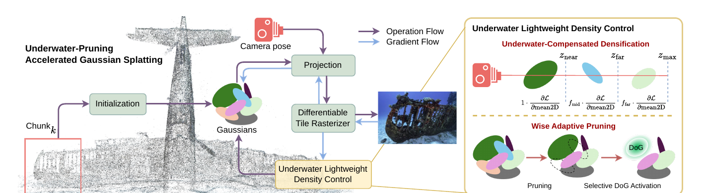
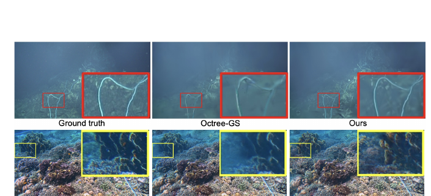

OceanXL achieves compact scene representations while preserving high-fidelity rendering quality. Compared with the strongest baseline, BlockGaussian, OceanXL reconstructs the Eiffel Tower 2016 wreck at 0.54 GB versus 2.7 GB — a 5× smaller model with improved visual quality.
Underwater 3D reconstruction is critical for applications such as marine exploration, ecological monitoring, and subsea infrastructure inspection, yet remains challenging at large scale due to light attenuation, scattering effects, and the limited coverage of existing capture systems. While 3D Gaussian Splatting (3DGS) enables high-quality real-time rendering, its direct application to large underwater scenes is still constrained by high memory consumption and inefficient optimization over extensive spatial coverage.
In this work, we propose OceanXL, a fast and scalable reconstruction framework for large-scale underwater environments based on 3DGS. We introduce a divide-and-conquer strategy that partitions scenes into spatially coherent blocks for efficient optimization while preserving global geometric consistency. We further propose an adaptive pruning scheme designed for underwater conditions, which removes redundant primitives and produces compact representations without compromising visual fidelity. We additionally introduce new large-scale underwater datasets containing diverse marine environments with extensive spatial coverage. Experimental results demonstrate that OceanXL achieves superior efficiency and compactness compared with existing approaches while maintaining high-fidelity rendering across large underwater scenes.
Scalable underwater 3DGS framework. A pipeline that combines adaptive scene decomposition with compact Gaussian optimization for efficient large-scale underwater reconstruction.
Underwater-aware lightweight density control. Compensates for attenuation-induced densification failures while progressively pruning redundant primitives — scalability without sacrificing fidelity.
Selective Difference-of-Gaussians (DoG) activation. Enhances local representational capacity only in reconstruction-sensitive regions, enabling compact yet high-fidelity representations.
New large-scale underwater datasets. Spanning shipwrecks, coral reefs, and deep-sea environments, with extensive experiments demonstrating improved efficiency–quality trade-offs.
The OceanXL pipeline begins with a sparse point cloud and camera poses estimated via Structure-from-Motion (SfM). The scene is first decomposed into spatially balanced partitions using Balanced Scene Partitioning (BSP), which adaptively adjusts sub-scene sizes to distribute optimization complexity across reconstruction chunks. Each partition is then reconstructed independently using Underwater-Pruning Accelerated Gaussian Splatting, which combines lightweight underwater-aware density control with a compact 3D Difference-of-Gaussians (DoG) representation. Finally, the reconstructed partitions are merged into a coherent global representation.

Overview of the Underwater-Pruning Accelerated Gaussian Splatting pipeline. From the SfM points of chunks generated by Balanced Scene Partitioning, Gaussian primitives are initialized and projected for fast rasterization. Underwater Lightweight Density Control regulates the number of primitives through Underwater-Compensated Densification (learnable depth-aware factors that compensate for attenuation) and Wise Adaptive Pruning (removing redundant primitives while progressively introducing 3D-DoG components for high-frequency detail).
Rather than relying on fixed-size grids, BSP recursively splits a partition along its longest spatial axis whenever its point count exceeds a threshold. A discrete search over candidate split ratios minimizes the relative imbalance r* = arg min |N₁−N₂| / max(N₁,N₂), yielding partitions with balanced point counts and stable per-chunk optimization.
Attenuation suppresses the 2D positional gradients that drive densification, starving distant regions of primitives. OceanXL groups Gaussians into near, mid, and far depth bands and assigns learnable densification weights fmid, ffar — no auxiliary network required at inference.
Redundant, low-contribution primitives are progressively pruned. To retain fidelity, compact DoG primitives (DoG(x) = G(x)−Gp(x)) are activated only where the 2D positional gradient magnitude exceeds a threshold — sharpening detail-critical regions without inflating model size.
Large-scale underwater datasets remain scarce due to the difficulty and cost of underwater data acquisition. We introduce two complementary datasets and additionally evaluate on two large-scale public scenes.
ISRO — 2,239 images of the Tokai Maru shipwreck near Guam, captured with a Nikon Z7 through the NPS SeaArray photogrammetry system.
KWAJ — 1,294 images of the Kwajalein Atoll F4U-1 Corsair wreck near Mellu Island (Nikon D5, Nauticam housing, 14–24 mm f/2.8 lens, 230 mm dome). 8K resolution with low-light conditions and sparse viewpoints.
Komodo — GoPro footage near Komodo, Indonesia (2704×1520, 24 fps, 60.77 s). Clear water with abundant dynamic marine life.
Amirantes1 / Amirantes2 — Lumix GH5 near the Amirantes, Seychelles (1920×1080, 24 fps). Amirantes1 exhibits strong surface-driven illumination variation; Amirantes2 contains dense sea-fan structures of high geometric complexity.
Additional large-scale public scenes used for evaluation:
Eiffel Tower 2016 (deep-sea wreck) Tabuhan P1 (Sweet Corals)We compare against large-scale 3DGS baselines — Hierarchical-GS, CityGaussian, Octree-GS, and BlockGaussian — and an underwater-specific baseline UW-GS combined with our BSP strategy (UW-GS*). All methods are kept trainable under the same single-GPU setting (RTX 3090). OceanXL achieves the smallest model sizes and fastest training times across most datasets while maintaining competitive or superior reconstruction quality.
Quantitative evaluation on five large-scale underwater scenes. Model size is in GB. Best 2nd 3rd per metric within each scene. UW-GS* = UW-GS combined with BSP; OOM = out-of-memory.
| Method | ISRO | KWAJ | Eiffel Tower 2016 | Tabuhan P1 | Komodo | |||||
|---|---|---|---|---|---|---|---|---|---|---|
| Size ↓ | PSNR ↑ | Size ↓ | PSNR ↑ | Size ↓ | PSNR ↑ | Size ↓ | PSNR ↑ | Size ↓ | PSNR ↑ | |
| UW-GS* (+BSP) | 0.923 | 20.53 | 1.070 | 21.32 | 1.320 | 19.98 | OOM | OOM | 0.891 | 22.56 |
| Hierarchical-GS | 13.310 | 20.28 | 6.280 | 21.42 | 9.110 | 17.30 | 39.530 | 16.28 | 1.590 | 23.98 |
| CityGaussian | 2.050 | 21.42 | 1.090 | 21.90 | 0.450 | 21.91 | 3.800 | 18.31 | 2.440 | 28.09 |
| Octree-GS | 1.420 | 24.14 | 0.373 | 24.20 | 0.184 | 23.20 | OOM | OOM | 0.181 | 28.31 |
| BlockGaussian | 3.300 | 24.43 | 0.630 | 27.47 | 2.700 | 23.77 | 17.700 | 20.87 | 0.410 | 26.00 |
| OceanXL (Ours) | 0.317 | 25.03 | 0.204 | 27.35 | 0.545 | 24.29 | 8.440 | 20.91 | 0.166 | 28.45 |
Full SSIM, LPIPS, and training-time figures are reported in the paper (Table 1). On Eiffel Tower 2016, OceanXL delivers the best PSNR while staying among the most compact models; on Komodo it is best on size and PSNR simultaneously.

Qualitative comparison on (top) Eiffel Tower 2016 and (bottom) Tabuhan P1. OceanXL recovers fine underwater structures while maintaining a compact scene representation.
We validate each component on the Abyssal dataset with 3DGS as the backbone. Starting from a BlockGaussian-style baseline, replacing the partitioning with BSP (V1) speeds up training by 33% while improving quality. Adding Underwater-Compensated Densification (V2) further improves PSNR/SSIM/LPIPS by compensating for attenuation-induced densification failures. Finally, integrating Wise Adaptive Pruning (Ours) yields the best overall trade-off — improving reconstruction while substantially reducing model size and training time.
| Variant | Components | Reconstruction | Efficiency | |||||
|---|---|---|---|---|---|---|---|---|
| BSP | UD | WAP | PSNR ↑ | SSIM ↑ | LPIPS ↓ | Time ↓ | Size ↓ | |
| 3DGS* (+BSP) | ✗ | ✗ | ✗ | 22.40 | 0.719 | 0.420 | 43m07s | 0.670 |
| V1 | ✓ | ✗ | ✗ | 23.05 | 0.721 | 0.402 | 31m17s | 0.593 |
| V2 | ✓ | ✓ | ✗ | 26.36 | 0.818 | 0.334 | 37m13s | 0.768 |
| Ours | ✓ | ✓ | ✓ | 26.19 | 0.797 | 0.351 | 28m56s | 0.261 |
BSP: Balanced Scene Partitioning, UD: Underwater-Compensated Densification, WAP: Wise Adaptive Pruning. Average PSNR/SSIM/LPIPS over the Abyssal dataset.
Real-time graphics & VR. The block-wise representation natively supports streaming and level-of-detail; chunks can be independently loaded, swapped, or culled, with a few-hundred-megabyte per-chunk footprint practical for consumer GPUs and head-mounted displays.
Drop-in asset format. The lightweight density control needs no auxiliary network at inference, integrating straightforwardly into existing splatting rasterizers and 3DGS pipelines used in film and game production.
Beyond underwater. Depth-banded densification compensation generalizes to other visibility-degraded environments — foggy outdoor scenes, smoke-filled architectural spaces, and atmospheric VFX backgrounds.
@article{oceanxl2026,
title = {OceanXL: Large-scale Underwater 3D Gaussian Splatting
via Block Partitioning and Adaptive Pruning},
author = {Anonymous Author(s)},
journal = {ACM Transactions on Graphics},
volume = {1},
number = {1},
year = {2026},
note = {Submission ID: 2122}
}